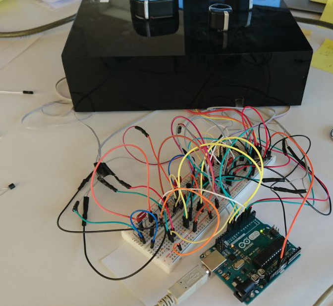

[. safety, emergency cases, haptic feedback .] — 2016
Using vibrotactile navigation in emergency cases. This is an approach for people to not rely on navigation on a mobile but purely on haptic feedback while navigating by walking in emergency cases.
